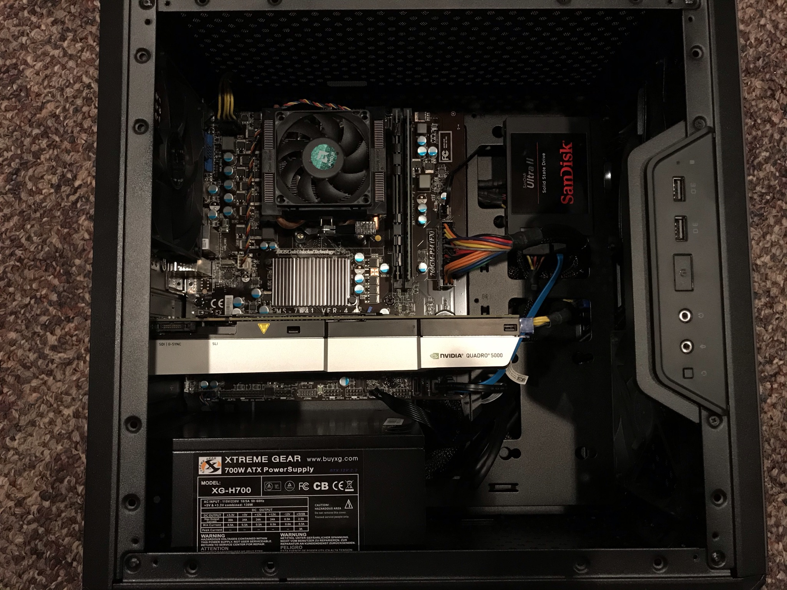

| My Classes | ||
|---|---|---|
| Course Number | Course Credits | Course Description |
| ACCT 495 | 3 | Special Topics in Accounting |
| CSCI 110 | 3 | Introduction to Computer Science |
| CSCI 160 | 4 | Computer Science I |
| MGMT 475 | 3 | Strategic Management |
| MUSC 201 | 3 | Rock & Roll History II |
My major at UND is Information Systems, and I am completing it through the Nistler College of Business and Public Administration. With this program, not only will I graduate with skills in identifying hardware, sofware, and proficiencies in software used by businesses, but I will also have skills in big data analytics, programming, and other higher level applications of my knowledge.
Another cool thing about Information Systems as a major is that it also includes all of the business core courses because it it through the school of business. That means that students graduating with this major will have experience in economics, finance, management, accounting, and others. This allows Information Systems majors to have a wider skill set, and also apply their knowledge in a business context.
I used the skills that I've acquired through my major to set it up and do some data analytics on it.
